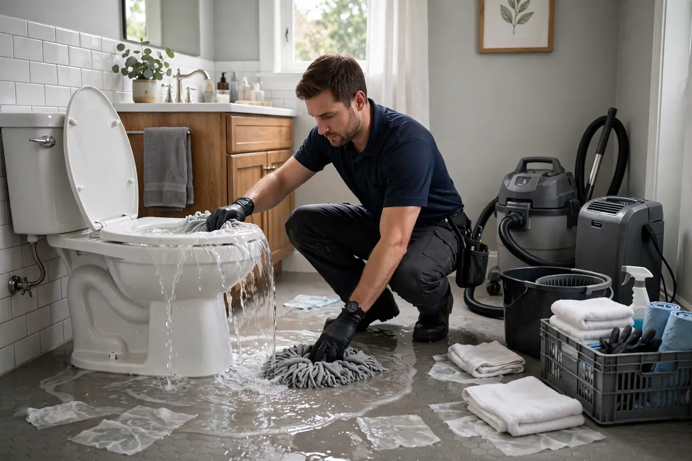

Toilet Overflow Cleanup in Hollywood, FL
A toilet overflow is two different jobs wearing the same disguise. A supply-line failure sends clean water across the bathroom floor — urgent for the flooring, but straightforward. A bowl backup or a sewer line pushing up through the toilet is black-water contamination, and everything it touches changes category. Toilet overflow cleanup starts by determining which one you're dealing with, because the answer decides the entire approach.

Understanding Toilet Overflow Cleanup in Hollywood
The source tells the story. A failed fill valve or supply hose floods with clean water that simply needs extraction and drying — the main risk is how fast it spreads under and beyond the bathroom. A clogged bowl that overflowed carries gray water: not sewage, but far from clean. And when a main-line blockage forces waste up through the toilet, that's Category 3, with all the contamination protocols that entails. Wax ring failures add a fourth variant — slow seepage at the base that rots the subfloor silently over months.
Bathrooms concentrate the damage. Tile and grout let water pass straight through to the subfloor, which swells and softens. Water migrates under vanities, into adjacent closets, and down through the ceiling below in multi-story homes. Because the category can vary fixture to fixture, assessment comes before action — treating a black-water backup like a clean spill, or vice versa, is the mistake that defines a bad cleanup.
How We Handle the Job
The water supply gets shut off at the fixture valve first — no point cleaning while it's still flowing. Then the category is assessed: clean supply overflow, gray bowl water, or black backup, each dictating protective measures and disposal rules. Clean water gets extracted and the area dried with moisture verification of the subfloor. Gray or black water triggers containment, removal of contaminated porous materials, thorough cleaning and disinfection of hard surfaces, and only then drying. Your plumber handles the fixture or line cause in parallel.
We explain the category finding upfront so you understand why the approach is what it is. When the overflow connects to a bigger plumbing issue, related work such as emergency water extraction, structural drying, or flood cleanup may be part of the same job — particularly if a main-line backup is involved.
Local Response and Insurance Support
Searching for toilet overflow cleanup near me usually means you need help without delay. We answer emergency calls around the clock. Documentation — photos and moisture readings — supports conversations with your insurance carrier when the loss is sudden and accidental. We do not decide coverage; we provide clear technical information about the work performed.
When to Call
Call if you have active water, wet materials that are not drying, odors after a leak, or a backup that may involve contaminated water. Early action in Hollywood’s climate is almost always less disruptive than waiting. For neighborhood-specific service, see our service areas.
Frequently Asked Questions
My toilet overflowed clean water — is it still a problem?
Yes, for the structure. Clean water won't contaminate, but it soaks subfloors, swells vanity bases, and migrates into adjacent rooms fast. It needs extraction and verified drying just like any other water loss.
What's the difference between an overflow and a backup?
An overflow starts at the fixture — a running toilet, a failed valve. A backup comes up from the drain line, which usually means contamination. Backups get the full Category 3 protocol; overflows are assessed by what actually spilled.
Do I need a plumber as well?
Almost always. We handle the water cleanup, drying, and documentation; a plumber fixes the fixture, valve, wax ring, or line blockage that caused it. The two scopes run side by side.
Can we use that bathroom during the cleanup?
Best to avoid it until the area is cleaned, disinfected if needed, and verified dry. Using a bathroom mid-cleanup risks spreading moisture — or contamination — to clean areas.